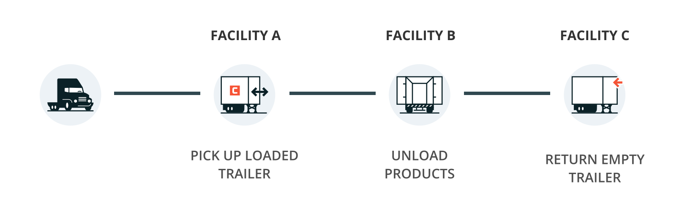
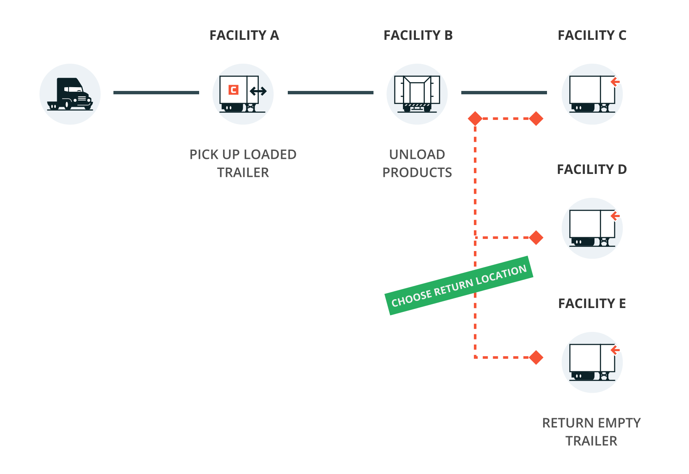
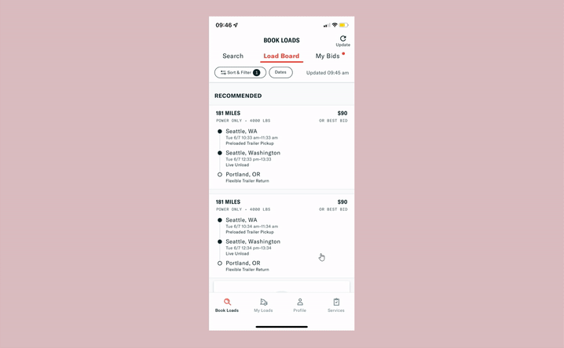
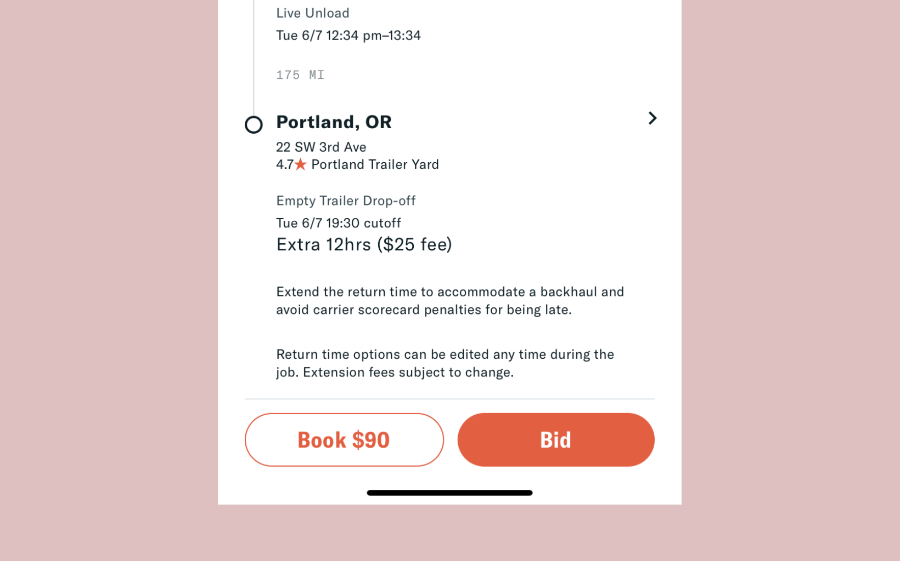
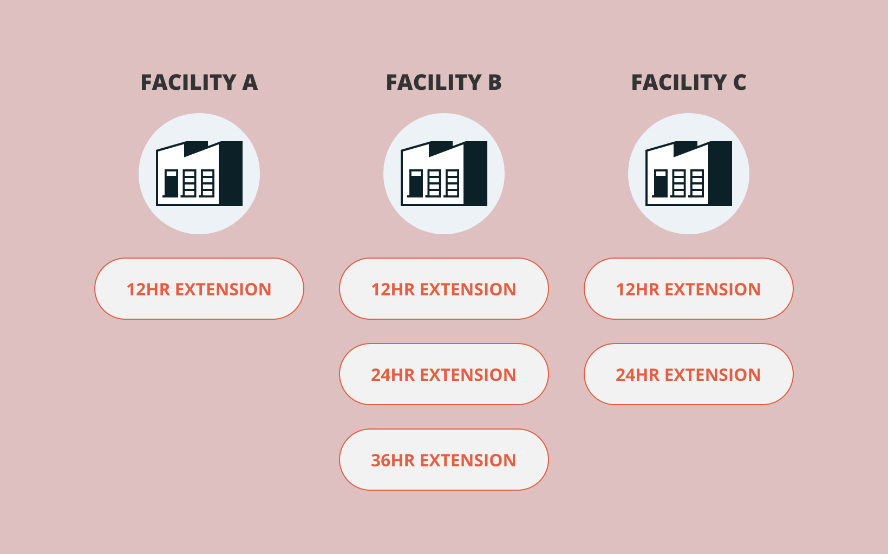
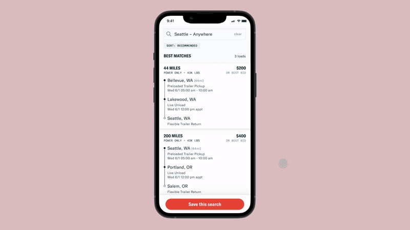

Context
Convoy is a marketplace that connects shippers looking to have their products transported with truck drivers looking for jobs. Jobs are determined by trailer types. One type of job Convoy offers to carriers are power only loads. Instead of using their own trailers, which generally cost ~$30,000, carriers can use Convoy’s trailers to complete a load. This lowers the barrier of entry for carriers but also lowers the payout for the job.
How these power only loads would work is that the carriers would show up with their tractors to the shipper facility, pick up a pre-loaded trailer, unload the products at another facility and return the empty trailer to a yard.

Logistics is about optimizations and making sure truck drivers’ time and equipment are 100% utilized. In 2019, Convoy introduced Extendable Trailer Returns (ETR) which allowed carriers to delay the trailer return time so that they find loads that require trailers, be more productive with their time, and earn even more money.
Built largely on the success of ETR, we wanted to introduce Flexible Trailer Return Locations (FTR-L) as a way for:
-
Carriers to choose where they end up when a load is completed so that they can optimize their work schedule
-
Convoy to balance their fleet of trailers and introduce another way to earn money and increase margins on the trailer rental program

Existing State of Things
Power only loads with flexible trailer return times list the extension options and associated fees on the load details page. If the carrier is interested in it, they can bid or book on the job. They are then prompted to select the return time for the empty trailer.

The Problem
Normally we would be able to apply the solution we have for flexible return times to the flexible return locations, but:

The existing solution is not scalable for upcoming features
We expect to offer more selection options. We’ve been increasing the amount of time carriers can request as an extension and can potentially show up to 10 options.
We also expect to show more on the load details page. We plan to add a new Reloads widget section on the page and need to prioritize what to show.

There are location dependencies
We know that return times are dependent on the return location and that the fees and bonuses for changing the load details are dependent on the return time and location.
Project Goals
-
Enable a new dimension to a flexible trailer network.
-
Design a way for carriers to be able to select the return location for power only loads. From carrier calls and survey results, we’re confident that carriers will find FTR-L valuable and are willing to pay for this feature.
In terms of success metrics, we will monitor for increased booking volume on Convoy. This is under the assumption that this flexibility will enable carriers to book more loads near their first job.:
Explorations
In early concepts, I explored ideas on how we could incorporate the feature into the stop details section and help carriers select a return location.

And as I was exploring ideas, I realized that there were things we weren’t sure about:
-
How does return location preference change for a carrier?
-
Is time or location more important? Are they equally important?
-
When is the best time to ask the user to pick time and/or location?
-
Will carriers be familiar with nearby metro cities?
-
What information do the carriers need to know to select a return location?
User Interviews
To answer these unknown questions, I reviewed the design concepts with 6 carriers to evaluate the usability and understanding on the new flexible trailer return locations feature. And I learned that:
-
Carriers’ work schedule is volatile so there’s no singular way to think about the return location. But there are several factors that go into their decision making (familiarity with facility, cost of the fee, time of day, upcoming loads).
-
A map view of the return locations would be nice to have since carriers have other methods of searching for the facility and satellite view.
From these interviews, there weren’t any major changes to the MVP designs but I learned what features should be included in the V2 of this project and convinced the PM of the features’ values.
Landed Solution

Next Up
With this feature, we’ve allow carriers to choose their trailer return location and time, but how might we help carriers make the correct selections and fill their schedule with compatible loads?
In an upcoming project, I focus on bridging together this Flexible Trailer Return Locations feature with reloads to make Convoy a more powerful tool for carriers to book loads.